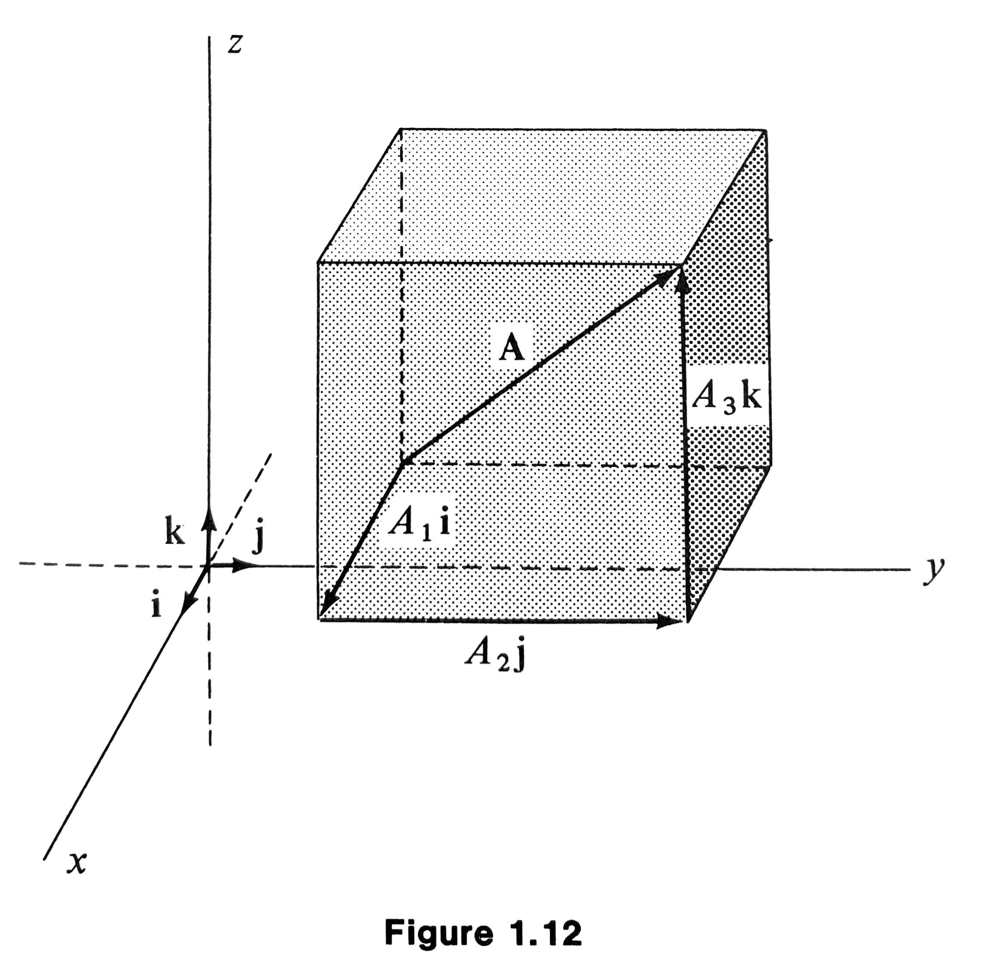
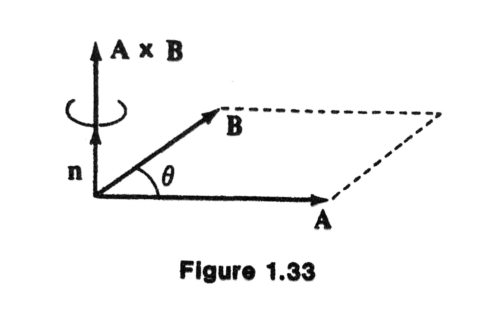

MATH 4100 - Vector Analysis
Jie Zhong
Department of Mathematics
California State University, Los Angeles
Chapter 1 Vector Algebra
1.1 Definitions
What is a vector?
- A vector is a quantity that has both direction and magnitude. It can be visualized as a directed line segment.
- A line segment \(PQ\) is a portion of the line between the points \(P\) and \(Q\)
- A directed line segment is a line segment when the endpoints are given a definite order.
- Two directed line segments are equivalent if they are parallel with the same direction and have the same length.
Definition (Vector)
- A vector is a collection of equivalent directed line segments. It is denoted by \(\mathbf{A}\) (boldfaced letters), or \(\underline{A}\) or \(\overrightarrow{A}\).
- In Figure 1.1, we see that \(PQ, RS\), and \(TU\) are all equivalent and they represent the same vector, regardless of the initial and end positions.

More Definitions
- The magnitude (or the length, or the norm) \(|\mathbf{A}|\) of a vector \(\mathbf{A}\) is the distance between the initial and terminal points of its (any) equivalent directed line segment.
- If \(P\) and \(Q\) coincide, \(PQ\) is said to be degenerate, and the line segment is just a point. The corresponding vector is called the zero vector.
- Zero vector has zero magnitude and does not have any direction.
- Scalar is just a (real) number.
Examples
- Vectors: velocity, position, force, acceleration, etc.
- Scalars: mass, energy, volume, temperature, etc.
1.2 Addition and Subtraction
Addition
- The sum \(\mathbf{C} = \mathbf{A} + \mathbf{B}\) has the initial point at the initial point of \(\mathbf{A}\) and the endpoint at the endpoint of \(\mathbf{B}\).
- By definition, if \(\mathbf{A} = \mathbf{A}'\) and \(\mathbf{B} = \mathbf{B}'\), then
Commutative:

Associative: \((\mathbf{A} + \mathbf{B}) + \mathbf{C} = \mathbf{A} + (\mathbf{B} + \mathbf{C})\)

Subtraction
- If \(\mathbf{B}\) is a vector, \(-\mathbf{B}\) is defined to be the vector with the same magnitude as \(\mathbf{B}\) but opposite direction.
- Subtraction of vectors: \(\mathbf{A} - \mathbf{B} = \mathbf{A} + (-\mathbf{B})\).
More on Addition and Subtraction
Triangle Rule
Parallelogram Rule
Properties of Zero Vector
- \(\mathbf{0} = - \mathbf{0}\)
- \(\mathbf{A} - \mathbf{A} = \mathbf{0}\)
- \(\mathbf{A} + \mathbf{0} = \mathbf{0} + \mathbf{A} = \mathbf{A}\)
Exercise (page 6)
- Write \(\mathbf{C}\) in terms of \(\mathbf{E}, \mathbf{D}, \mathbf{F}\).
- Write \(\mathbf{G}\) in terms of \(\mathbf{C}, \mathbf{D}, \mathbf{E}, \mathbf{K}\).
- Solve for \(\mathbf{x}: \mathbf{x} + \mathbf{B} = \mathbf{F}\).
- Solve for \(\mathbf{x}: \mathbf{x} + \mathbf{H} = \mathbf{D} - \mathbf{E}\).
1.3 Multiplication of Vectors by Numbers
Properties of Magnitude
- \(|\mathbf{A}| \ge 0\)
- \(|\mathbf{A}| = 0\) if and only if \(\mathbf{A} = \mathbf{0}\)
- \(|\mathbf{A}| = |-\mathbf{A}|\), and \(|\mathbf{A} - \mathbf{B}| = |\mathbf{B} - \mathbf{A}|\)
- Triangle inequality: \(| \mathbf{A} + \mathbf{B} | \le | \mathbf{A} | + | \mathbf{B} |\)

Scalar multiplication
A scalar multiple of \(\mathbf{A}\) by a number \(s\) is defined by \(s \mathbf{A}\):
- \(|s \mathbf{A}| = |s| |\mathbf{A}|\).
- \(s \mathbf{A}\) has the same direction if \(s>0\) or the opposite direction if \(s<0\).

Properties of Scalar Multiplication
- \(0 \mathbf{A} = \mathbf{0}, 1 \mathbf{A} = \mathbf{A}, (-1) \mathbf{A} = - \mathbf{A}\)
- \((s + t) \mathbf{A} = s \mathbf{A} + t \mathbf{A}\)
- \(s(\mathbf{A} + \mathbf{B}) = s \mathbf{A} + s \mathbf{B}\)
- \(s(t \mathbf{A}) = (st) \mathbf{A}\)
Standardization
- Unit vector: a vector whose magnitude is \(1\).
- We can create a unit vector in the direction of any given (nonzero) vector \(\mathbf{A}\):
This process is called the standardization or normalization of a vector.
1.4 Cartesian Coordinates
Cartesian Coordinates in \(\mathbb{R}^2\)
In this section, we consider a cartesian coordinate system in the plane or \(\mathbb{R}^2\) by introducing two mutually perpendicular axes, labeled as \(x\) and \(y\).
The unit vectors \(\mathbf{i}, \mathbf{j}\) parallel to the \(x\text{-axis}\), \(y\text{-axis}\), respectively, pointing to the positive directions.
Orthogonal Projections
Every vector in the plane can be written uniquely in the form
The real numbers \(A_1, A_2\) are called the cartesian components (or orthogonal projections) of \(\mathbf{A}\).
The magnitude of the vector \(\mathbf{A}\) is
Direction Angles
The angles between the vector and the coordinate axes are the direction angles, which is conventionally taken to be positive in the counterclockwise sense.
Suppose \(\mathbf{A}\) is a nonzero vector, how to express the direction angle \(\theta\) in the figure below in terms of \(\mathbf{A}, A_1, A_2\)?

1.5 Space Vectors
Cartesian Coordinates in \(\mathbb{R}^3\)
- All concepts or ideas from Sec 1.4 can be extended to \(\mathbb{R}^3\).
- The unit vectors \(\mathbf{i}, \mathbf{j}, \mathbf{k}\) parallel to the \(x\text{-axis}\), \(y\text{-axis}\), \(z\text{-axis}\) respectively, pointing to the positive directions.
- Every vector in the plane can be written uniquely in the form
- The real numbers \(A_1, A_2, A_3\) are called the cartesian components (or orthogonal projections) of \(\mathbf{A}\).

Magnitude and Direction Angles
The magnitude of the vector \(\mathbf{A}\) is
The angles between the vector and the coordinate axes are the direction angles, which can be determined by
Pythagorean Theorem

Addition and Scalar Multiplication in \(\mathbb{R}^3\)
Vector addition and scalar multiplication proceeds component-wise:
Suppose \(\mathbf{A} = A_1 \mathbf{i} + A_2 \mathbf{j} + A_3 \mathbf{k}\) and \(\mathbf{B} = B_1 \mathbf{i} + B_2 \mathbf{j} + B_3 \mathbf{k}\), then
- \(\mathbf{A} + \mathbf{B} = (A_1 + B_1) \mathbf{i} + (A_2 + B_2) \mathbf{j} + (A_3 + B_3) \mathbf{k}\)
- \(s \mathbf{A} = (s A_1) \mathbf{i} + (s A_2) \mathbf{j} + (s A_3) \mathbf{k}\)
1.6 Types of Vectors
- Position vector of the particle: directed line segment extending from the origin \((0, 0, 0)\) to the point \((x, y, z)\) where the particle is located.
- Displacement vector of the particle: directed line segment extending from the initial position \(\mathbf{R}_1 = (x_1, y_1, z_1)\) to its final position \(\mathbf{R}_2 = (x_2, y_2, z_2)\).
- The displacement vector is an intrinsic property of the particle, i.e, it does not depend on the choice of the coordinate system.
1.7 Some Problems in Geometry
Example 1.2
If the midpoints of the consecutive sides of a quadrilateral are joined by line segments, is the resulting quadrilateral a parallelogram?
Note: The quadrilateral needs not be a plane figure.
Solution
Let the sides be made into directed line segments \(\mathbf{A}, \mathbf{B}, \mathbf{C}\), and \(\mathbf{D}\), as shown.
WTS: \(TUVW\) is a parallelogram.
Solution - Continued
- To conclude that \(TUVW\) is a parallelogram, we will show that \(TU\) is parallel to \(-VW\).
- We have
- \(\mathbf{A} + \mathbf{B} + \mathbf{C} + \mathbf{D} = \mathbf{0}\).
- Since \(\mathbf{A} + \mathbf{B} = - (\mathbf{C} + \mathbf{D})\), we have \(TU = - VW\) and thus \(TU\) is parallel to \(-VW\).
Example 1.5
Let \(\theta\) denote the angle between two nonzero vectors \(\mathbf{A}\) and \(\mathbf{B}\). Show that
Note: This is one of the most important identities in vector algebra.
Idea of Proof
Compare component-wise and geometric derivation of \(|\mathbf{A}- \mathbf{B}|\).
Proof
Using components:
Using geometry:
Comparing two expressions of \(|\mathbf{A} - \mathbf{B}|^2\), we conclude
Example 1.6
Show that the vectors \(\mathbf{A} = 2 \mathbf{i} - \mathbf{j} + 5 \mathbf{k}\) and \(\mathbf{B} = \mathbf{i} + 7 \mathbf{j} + \mathbf{k}\) are perpendicular to each other.
Solution
so \(\theta = 90^\circ\).
1.8 Equations of a Line
Parametric Equation
Given a point \(\mathbf{R}_0 = x_0 \mathbf{i}+ y_0 \mathbf{j} + z_0 \mathbf{k}\), and a nonzero vector \(\mathbf{V}= a \mathbf{i} + b \mathbf{j} + c \mathbf{k}\), the parametric equation of the line that passing through \(\mathbf{R}_0\) and parallel to \(\mathbf{V}\) is
where \(t\) is a parameter that ranges between \(-\infty\) and \(\infty\) (you may think of it as time).
How to Derive the Equation?
Note that \(\mathbf{R}\) and \(\mathbf{R}_0\) are two points on the line, so the vector from \(\mathbf{R}_0\) to \(\mathbf{R}\) should be parallel to the desired line, and thus should be parallel to \(\mathbf{V}\), that is,
Note: we used the fact that two vectors are parallel to each other if and only if they are scalar multiple of each other.
More on Parametric Equations
Try out some values of \(t\):
- \(t = 0\), then \(\mathbf{R} = \mathbf{R}_0\)
- \(t = 1\), then \(\mathbf{R} = \mathbf{R}_0 + \mathbf{V}\)
- \(t = -1\), then \(\mathbf{R} = \mathbf{R}_0 - \mathbf{V}\)
More on Parametric Equations - Continued
We can replace \(t\) by any scalar function of \(t\), as long as the function takes all values between \(-\infty\) and \(\infty\).
For example,
Note: Parametric form is not unique.
More on Parametric Equations - Continued
However, if we write
then it represents only “half” of the line.
Or, if we write
then it represents just the segment of the line between \(\mathbf{R}_0 - \mathbf{V}\) and \(\mathbf{R}_0 + \mathbf{V}\).
Non-parametric Form
Recall the parametric form:
Alternatively, if we eliminate \(t\) (assuming \(a, b, c\) nonzero), we obtain the non-parametric equation of the line
Example 1.8
Find equations of the line passing through \((2, 0, 4)\) and parallel to \(2 \mathbf{i} + \mathbf{j} + 3 \mathbf{k}\), both in the parametric and non-parametric form.
Solution
The condition that \(\mathbf{R} - \mathbf{R}_0\) is parallel to \(\mathbf{V}\) becomes
Equivalently,
Non-parametric form:
Example 1.10
Find a unit vector parallel to the line
Solution
By comparing with the general non-parametric form
we have
Example 1.10 - Continued
Vector parallel to the line is
Normalization:
1.9 Scalar Products
Definition
Recall the identity:
or, equivalently,
Scalar product (dot product or inner product) of vectors \(\mathbf{A}\) and \(\mathbf{B}\):
Geometric Interpretation
We identify \(\mathbf{B}\cos \theta\) as the length of the orthogonal projection of \(\mathbf{B}\) in the direction of \(\mathbf{A}\), with positive sign if \(\theta < \pi /2\) or negative sign if \(\theta > \pi / 2\).
Two nonzero vectors \(\mathbf{A}, \mathbf{B}\) are orthogonal (or perpendicular), denoted by \(\mathbf{A} \perp \mathbf{B}\), if
Properties of Scalar Product
- \(\mathbf{A} \cdot \mathbf{A} = |\mathbf{A}|^2\).
- \(\mathbf{A} \cdot \mathbf{A} \ge 0\)
- \(\mathbf{A} \cdot \mathbf{A} = 0\) if and only if \(\mathbf{A} = \mathbf{0}\)
- \(\mathbf{A} \cdot \mathbf{B} = \mathbf{B} \cdot \mathbf{A}\)
- \((\mathbf{A} + \mathbf{B}) \cdot \mathbf{C} = \mathbf{A} \cdot \mathbf{C} + \mathbf{B} \cdot \mathbf{C}\)
- \((a \mathbf{A})\cdot \mathbf{B} = \mathbf{A} \cdot (a \mathbf{B}) = a(\mathbf{A} \cdot \mathbf{B})\)
Scalar Product in Physics
where \(\mathbf{F}\) is a constant force acting through a displacement \(\mathbf{D}\).
Example 1.13
Find the scalar product of \(4 \mathbf{i} - 5 \mathbf{j} - \mathbf{k}\) and \(\mathbf{i} + 2 \mathbf{j} + 3 \mathbf{k}\).
Solution
Example 1.14
Find the angle between the vectors \(\mathbf{A} = 2 \mathbf{i} + 2 \mathbf{j} - \mathbf{k}\) and \(\mathbf{B} = 3 \mathbf{i} + 4 \mathbf{j}\).
Solution
- \(|\mathbf{A}| = 3\) and \(|\mathbf{B}| = 5\).
- \(\mathbf{A} \cdot \mathbf{B} = 14\).
- \(\cos \theta = \mathbf{A} \cdot \mathbf{B} / |\mathbf{A}| |\mathbf{B}| = 14/15\).
- \(\theta = \cos^{-1}(14/ 15)\).
Example 1.16 (A Maximal Principle)
The unit vector \(\mathbf{n}\) making \(\mathbf{D}\cdot \mathbf{n}\) a maximum is the unit vector pointing in the same direction as \(\mathbf{D}\).
Why?
This will be a maximum when \(\cos \theta = 1\), i.e., \(\theta = 0\).
Example 1.17
The scalar product can be used to express components along the axes.
For any vector \(\mathbf{A} = x \mathbf{i} + y \mathbf{j} + z \mathbf{k}\), we have
and thus
Parallel and Perpendicular Decomposition
Given two vectors \(\mathbf{A}\) and \(\mathbf{B}\), and we would like to decompose \(\mathbf{B}\) as follows:
where \(\mathbf{B}_{\|}\) is parallel to \(\mathbf{A}\) and \(\mathbf{B}_\perp\) is perpendicular to \(\mathbf{A}\).
Parallel Component
By the geometric interpretation of the scalar product,
Now we would like to construct a vector of the length above, but in the direction of \(\mathbf{A}\) (so it will be parallel to \(\mathbf{A}\)).
We just simply take the unit vector along \(\mathbf{A}\) and multiply by the length, and we have the following:
Parallel Component - Continued
Note: The length of the parallel component is
Perpendicular Component
Then we see that \(\mathbf{B}_\perp\) is just the rest of \(\mathbf{B}\):
It is easy to check that \(\mathbf{B}_{\|}\perp \mathbf{B}_\perp\) directly.
Note: This is also the basic idea of the Gram-Schmidt process to orthogonalize a set of vectors.
Example 1.18
Decompose the vector \(6 \mathbf{i}+2 \mathbf{j} - 2 \mathbf{k}\) into vectors parallel and perpendicular to \(\mathbf{i} + \mathbf{j} + \mathbf{k}\).
Solution
The parallel vector is
The perpendicular vector is
1.10 Equations of a Plane
Parametric Equation of a Plane
Recall that in Section 1.8, we specified a straight line by giving a point \(\mathbf{R}_0\) on the line and a vector \(\mathbf{V}\) parallel to the line:
Similarly, we specify a plane by giving a point \(\mathbf{R}_0\) in the plane, and two vectors \(\mathbf{A}\) and \(\mathbf{B}\) parallel to the plane:
for \(-\infty < s, t < \infty\).
Note: The expressions \(s \mathbf{A} + t \mathbf{B}\) is called a linear combination of \(\mathbf{A}\) and \(\mathbf{B}\), which spans the plane.
Non-parametric Equation of a Plane
Key observation : can use one normal (or perpendicular) vector \(\mathbf{N}\) to the plane, instead of \(\mathbf{A}\) and \(\mathbf{B}\).
If \(\mathbf{R}\) is the position vector to a point in the plane, then
or equivalently,
Non-parametric Equation of a Plane - Continued
Assume that \(\mathbf{R} = x \mathbf{i} + y \mathbf{j} + z \mathbf{k}, \mathbf{R}_0 = x_0 \mathbf{i} + y_0 \mathbf{j} + z_0 \mathbf{k}\) , and \(\mathbf{N} = a \mathbf{i} + b \mathbf{j} + c \mathbf{k}\), then
or equivalently,
where \(d = \mathbf{R}_0 \cdot \mathbf{N} = a x_0 + b y_0 + c z_0\).
Example 1.20
Find an equation of the plane passing through \((1, 3, -6)\) perpendicular to the vector \(3 \mathbf{i} - 2 \mathbf{j} + 7 \mathbf{k}\).
Solution
or,
Example 1.21
Find an equation of the plane passing through \((1, 2, 3)\) perpendicular to the line
Solution
A vector parallel to the given line above can be read off the coefficients in the denominator:
This vector is perpendicular to the desired plane, so
Example 1.23
Find the angle between the two planes \(3x + 4y = 0\) and \(2x + y - 2z = 5\).
Solution
Key observation:
The normal vectors are
The angle is obtained via
Example 1.24
Show that the distance between an arbitrary point \((x_1, y_1, z_1)\) and the plane \(ax + by + cz = d\) is given by
Solution
The desired distance is the absolute value of the (signed) length of the component of \(\mathbf{R}_1 - \mathbf{R}_0\) along the normal vector, where \(\mathbf{R}_1\) is the position vector of the point \((x_1, y_1, z_1)\), and \(\mathbf{R}_0\) is the position vector of the point \((x, y, z)\) in the plane.
Thus, the distance is
Example 1.25
Find the distance between the parallel planes \(x + y + z = 5\) and \(x + y + z = 10\).
Solution
We first pick an arbitrary point in the first plane, say \((1, 1, 3)\).
Then we desired distance is the distance between this point and the second plane:
1.11 Orientation
Right-handed System
Let \(\mathbf{A}, \mathbf{B}\) and \(\mathbf{C}\) be nonzero vectors, not all parallel to the same plane.
The vectors \(\mathbf{A}\) and \(\mathbf{B}\) determine a plane passing through the origin.
The rotation of \(\mathbf{A}\) into \(\mathbf{B}\) will advance a right-handed screw into the general direction of \(\mathbf{C}\).
The triple \(\{\mathbf{A}, \mathbf{B}, \mathbf{C}\}\) forms a right-handed system.
1.12 Vector Products
Review of Scalar Product
Recall that
Question:
Is it natural to define another kind of product, given by the length of \(\mathbf{A}\) times the component of \(\mathbf{B}\) perpendicular to \(\mathbf{A}\)?
If yes, is there any applications in physics too?
Definition (Vector Product)
The vector product (or cross product) of two nonzero vectors \(\mathbf{A}\) and \(\mathbf{B}\), is defined by
where \(\mathbf{n}\) is the unit vector perpendicular to both \(\mathbf{A}\) and \(\mathbf{B}\) and such that the triple \(\{\mathbf{A}, \mathbf{B}, \mathbf{n}\}\) is a right-handed system.

Magnitude of Vector Product
Why?
Application in Physics
The torque is the rotational equivalent of linear force and represents the capability to produce the change in the rotational motion of a (rigid) body.
Note: The direction of the torque \(\mathbf{A} \times \mathbf{B}\) is perpendicular to the plane spanned by \(\mathbf{A}\) and \(\mathbf{B}\).

Properties of Vector Product
\(\mathbf{A} \times \mathbf{B} = \mathbf{0}\) if and only if one of the vectors are zero or they are parallel.
Properties of Vector Product - Continued
In particular, the vector product of orthogonal unit vectors \(\mathbf{i}\) and \(\mathbf{j}\) is
such that the triple \(\{\mathbf{i}, \mathbf{j}, \mathbf{k}\}\) is a right-handed coordinate system.
- \(\mathbf{j} \times \mathbf{k} = \mathbf{i}\), \(\mathbf{k} \times \mathbf{i} = \mathbf{j}\)
- \(\mathbf{i} \times \mathbf{k} = - \mathbf{j}\), \(\mathbf{j} \times \mathbf{i} = - \mathbf{k}\), \(\mathbf{k} \times \mathbf{j} = - \mathbf{i}\)
- \(\mathbf{i} \times \mathbf{i} = \mathbf{j} \times \mathbf{j} = \mathbf{k} \times \mathbf{k} = \mathbf{0}\)
Determinant Form of Vector Product
If \(\mathbf{A} = A_1 \mathbf{i} + A_2 \mathbf{j} + A_3 \mathbf{k}\) and \(\mathbf{B} = B_1 \mathbf{i} + B_2 \mathbf{j} + B_3 \mathbf{k}\), by the distributive property,
This is equivalent to the determinant form:
Digression to Matrices and Determinants
We define a \(2\times 2\) matrix to be an array
where \(a_{11}, a_{12}, a_{21}\) and \(a_{22}\) are four scalars.
The determinant
Example
\(3 \times 3\) Matrices
A \(3 \times 3\) matrix is an array
where, again, each \(a_{ij}\) is a scalar denoting the entry in the array that is the \(i\text{-th}\) row and the \(j\text{-th}\) column.
We define the determinant of a \(3\times 3\) matrix by the rule
\(3 \times 3\) Matrices - Continued
In fact, we can expand a \(3 \times 3\) determinant along any row or column using the signs in the following checkerboard pattern:
\(3 \times 3\) Matrices - Continued
Expand along the first row.
Expand along the second column.
Determinant Form (Revisited)
Example 1.26
Find the vector product \(\mathbf{A} \times \mathbf{B}\) if \(\mathbf{A} = 3 \mathbf{i} + 4 \mathbf{j}\) and \(\mathbf{B} = \mathbf{i} - 2 \mathbf{j} + 5 \mathbf{k}\).
Solution
Example 1.27
Find two unit vectors perpendicular to both \(\mathbf{A} = 2 \mathbf{i} + 2 \mathbf{j} - 3 \mathbf{j}\) and \(\mathbf{B} = \mathbf{i} + 3 \mathbf{j} + \mathbf{k}\).
Solution
\(\mathbf{A} \times \mathbf{B}\) is perpendicular to both \(\mathbf{A}\) and \(\mathbf{B}\), and
One desired unit vector is
Example 1.27 - Continued
How to find another perpendicular vector?
Example 1.28
Find the area of the parallelogram determined by \(\mathbf{A} = \mathbf{i} + \mathbf{j} - 3 \mathbf{k}\) and \(\mathbf{B} = -6 \mathbf{j} + 5 \mathbf{k}\).
Solution
The desired area is \(|\mathbf{A} \times \mathbf{B}| = \sqrt{13^2 + 5^2 + 6^2} = \sqrt{230}\).
Example 1.29
Find the equation of the line passing through \((3, 2, -4)\) parallel to the line of intersection of th two planes \(x + 3y - 2z =8\) and \(x-3y + z =0\).
Solution
- Recall from Sec 1.8 that the non-parametric equation of the line that passing through a point \((x_0, y_0, z_0)\) and parallel to a nonzero vector \(\mathbf{V} = a \mathbf{i} + b \mathbf{j} + c \mathbf{k}\) is
- Now we only need to find a nonzero vector parallel to the line of the intersection of the two planes, which is parallel to the desired line.
Example 1.29 - Continued
Note that
are the normal vectors to the two planes.
\(\mathbf{A} \times \mathbf{B}\) is perpendicular to both \(\mathbf{A}\) and \(\mathbf{B}\), and so it is parallel to the two planes. Hence, \(\mathbf{A} \times \mathbf{B}\) is parallel to the line of intersection.
Example 1.29 - Continued
The equation of the desired line:
or, equivalently,
Angular Velocity
Consider a rigid body rotating about a fixed axis with a constant angular speed \(\omega\). Then the velocity of the particle at the point \(\mathbf{R}\) is
where \(\vec{\omega}\) is directed along the axis of rotation and with the magnitude \(|\vec{\omega}| = \omega\).
The speed (magnitude of the velocity) of the particle is
where \(\theta\) is the angle between \(\mathbf{R}\) and the axis of rotation.

1.13 Triple Scalar Product
Definition
The triple scalar product of three vectors \(\mathbf{A}, \mathbf{B}\) and \(\mathbf{C}\) is defined by
Determinant form:
Note:
- \([\mathbf{i}, \mathbf{j}, \mathbf{k}] = 1\).
- \([\mathbf{A}, \mathbf{B}, \mathbf{C}]\) is positive if and only if \(\{\mathbf{A}, \mathbf{B}, \mathbf{C}\}\) forms a right-handed system.
Geometric Interpretation
The volume of the parallelepiped with coterminal edges \(\mathbf{A}, \mathbf{B}\) and \(\mathbf{C}\) is given, up to sign, by \([\mathbf{A}, \mathbf{B}, \mathbf{C}]\).
Example 1.33
Compute \([\mathbf{A}, \mathbf{B}, \mathbf{C}]\) if \(\mathbf{A} = 2 \mathbf{i} + \mathbf{k}, \mathbf{B} = 3 \mathbf{i} + \mathbf{j} + \mathbf{k}\), and \(\mathbf{C} = \mathbf{i} + \mathbf{j} + 4 \mathbf{k}\).
Solution
Properties of the Triple Scalar Product
\([\mathbf{A}, \mathbf{B}, \mathbf{C}] = [\mathbf{B}, \mathbf{C}, \mathbf{A}] = [\mathbf{C}, \mathbf{A}, \mathbf{B}]= - [\mathbf{B}, \mathbf{A}, \mathbf{C}] = - [\mathbf{C}, \mathbf{B}, \mathbf{A}]= - [\mathbf{A}, \mathbf{C}, \mathbf{B}]\).
\([\mathbf{A}, \mathbf{B}, \mathbf{C}] = 0\) if and only if three vectors are coplanar, i.e., on the same plane.
\([\mathbf{A}, \mathbf{B}, \mathbf{C}]\) is linear in each argument.
For example,
All these properties can be proved by the properties of determinant of matrices.
1.14 Vector Identities
Of the following identities, the first is the most important because the other three can be derived from it fairly easily:
Intuitive Interpretation of Identity \eqref{eq:1.30}
- \(\mathbf{V} = \mathbf{A} \times (\mathbf{B} \times \mathbf{C})\) (if not the zero vector) must be perpendicular to \(\mathbf{B} \times \mathbf{C}\).
- \(\mathbf{B}\times \mathbf{C}\) is perpendicular to both \(\mathbf{B}\) and \(\mathbf{C}\).
- \(\mathbf{V}\) must be in the plane spanned by \(\mathbf{B}\) and \(\mathbf{C}\), i.e. \(\mathbf{V} = m \mathbf{B} + n \mathbf{C}\), for suitable scalars \(m\) and \(n\).
- The fact that \(m = \mathbf{A} \cdot \mathbf{C}\) and \(n = - \mathbf{A} \cdot \mathbf{B}\) is not obvious here, but please read Sec 1.15.
For Identity \eqref{eq:1.31}:
Note that
Then by using identity \eqref{eq:1.30}, we have
For Identity \eqref{eq:1.32}:
Let \(\mathbf{U} = \mathbf{C} \times \mathbf{D}\), then by identity \eqref{eq:1.31},
By the definition of the triple scalar product, we have